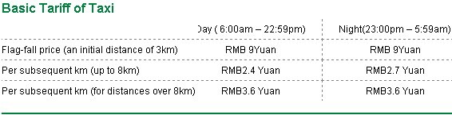
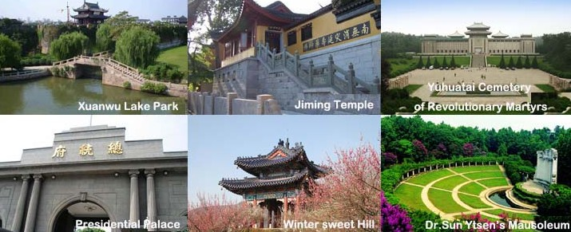

When you reach Nanjing , we will pick-up transportation. please wait us to pick up you. You can also take taxi to Nanjing University (22,Hankou road).
LUKOU AIRPORT--------Nanjing University （GULOU CAMPUS）
Scheme 1 ：From nanjing lukou international airport take a taxi and the fare is about 130 yuan, takes about 40 minutes. Tell the driver:"Nanjing University ,22 Hankou road. (南京大学)"
Scheme 2：In nanjing lukou international airport，you can take airport shuttle bus to ZhongHuaMen long-distance passenger depot( fare 25 yuan, travel about 1 hour) ,and then take the subway 1 to ZHUJIANG river road, get off to guangzhou road - the direction of zhongshan road walk 10 minutes to guangzhou road door.
Nanjing South Railway Station------Nanjing University （GULOU CAMPUS）
Scheme 1：Take metro line 1 south delay line (MaiGao bridge direction), in the pearl river road stop, right which is 150 meters of nanjing university, about 40 minutes, fare 3 yuan.
Scheme 2：Take a taxi, fare about 50 yuan, travel about 50 minutes.



Nanjing, an ancient metropolis of six different dynasties, is a city with mountains, waters and green trees.
The ancestors of Nanjingers can be dated back to the apemen who lived in caves at Tangshan Hill hundreds of thousands of years ago. About 5000 to 6000 years ago some people came to the tableland by waters and made a living by fishing, hunting or farming.
Nanjing took shape at the confluence of the Changjiang (Yangtse) and Qinhuaihe rivers. Goujian, King of Yue State, had a city built by the Qinhuaihe and named it Yuecheng 2500 years ago. Later Chu State had a city called Jinling erected at the foot of Qingliangshan Hill. Yuecheng and Jinling were the embryonic forms of Nanjing.
The Yangtse River rushes from southwest towards the Stone Hill which is strategically located and difficult of access. Sun Quan, King of State Wu, had his military fortress built here with the giant rocks by the river as the wall and named it the Stone City, which is also called the Ghost Face City because of its grotesque shape. Ever since then, Jinling, Shitou (Stone) have been the ancient aliases of Nanjing.
The Six Dynasties (from beginning of the 3rd century to the end of the 6th century) were the prime period of Nanjing. After the downfall of Western Jin, North China was reigned by chieftains of some nomads. Many aristocrats, men of letters, craftsmen thronged to the south, promoting the development of culture, economy, and crafts and technology. And Nanjing, the biggest city of the time became a new cultural center in ancient China.
In modern Nanjing there are some 40 universities and colleges and more than 300 scientific research institutes, several art troupes and a theatre for kunqu opera, from which about 100 modern operas in China derived. Nanjing Library is the third biggest library in China in terms of its collection. The Nanjing Museum boasts a rich collection of arts and crafts.
The modern new Nanjing is the economic and cultural center in the lower reaches of the Yangtse River. It has started its voyage to the outside world.
more details: http://www.fnetravel.com/travel_info/english/nanjing-info/nanjing.html